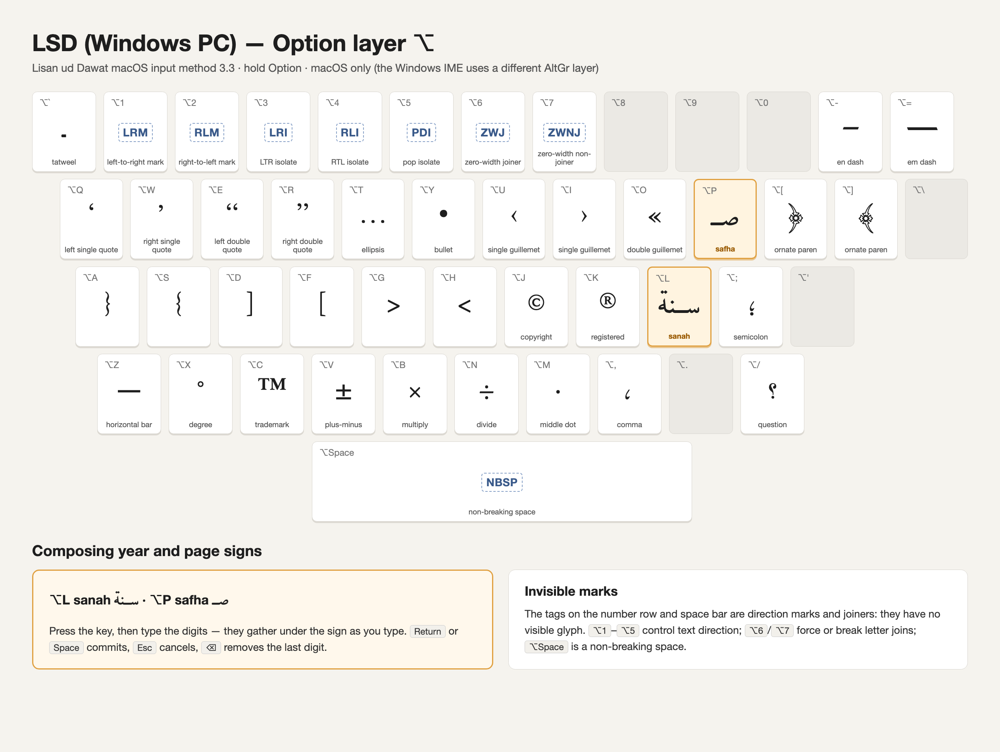
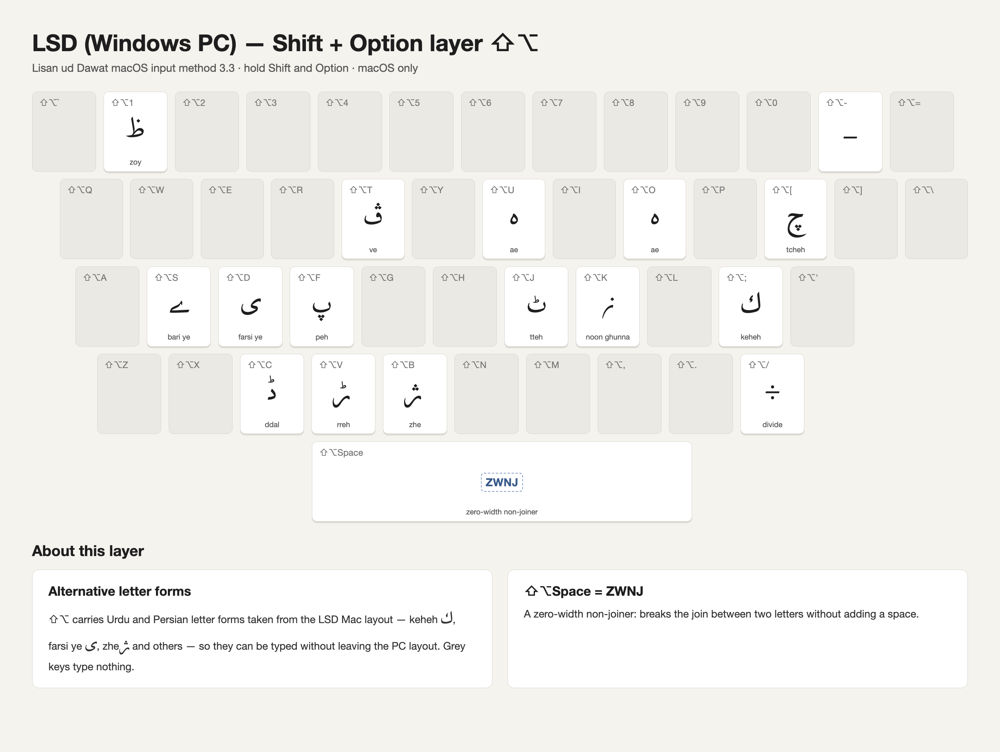

LigaCheh Keyboard · macOS
LigaCheh macOS Input Method
A richer input method for macOS.
Beyond the static Ukelele layout, this is a full input method: text prediction as you type, a Roman mode that transliterates Latin keystrokes into Lisān ud-Daʿwat, double-press shortcuts for the letters that need them, and honorific insertion. It shares its prediction engine with the iOS and Android keyboards.
Install
- Open the downloaded
.pkgand follow the installer. - Add it under System Settings → Keyboard → Text Input → Input Sources → Edit…, then choose it from the input menu in the menu bar.
- If macOS does not list it straight away, log out and back in once.
Version 3.3, for macOS 13 and later. Signed with a Developer ID certificate and notarized by Apple, so it installs without a Gatekeeper warning.
Key layout
The LSD (PC) layout, layer by layer. Tap an image to open it full size.





Prefer something simpler? The Ukelele layout and the Keyman package are key mappings only, without prediction.
← LigaCheh Keyboard